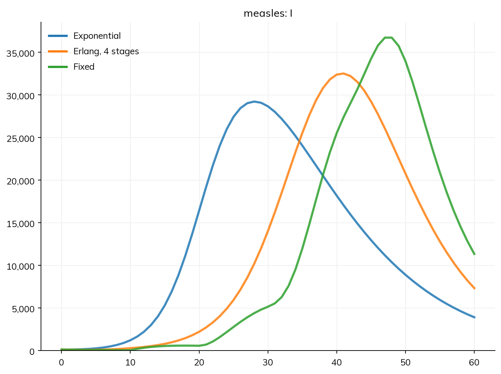
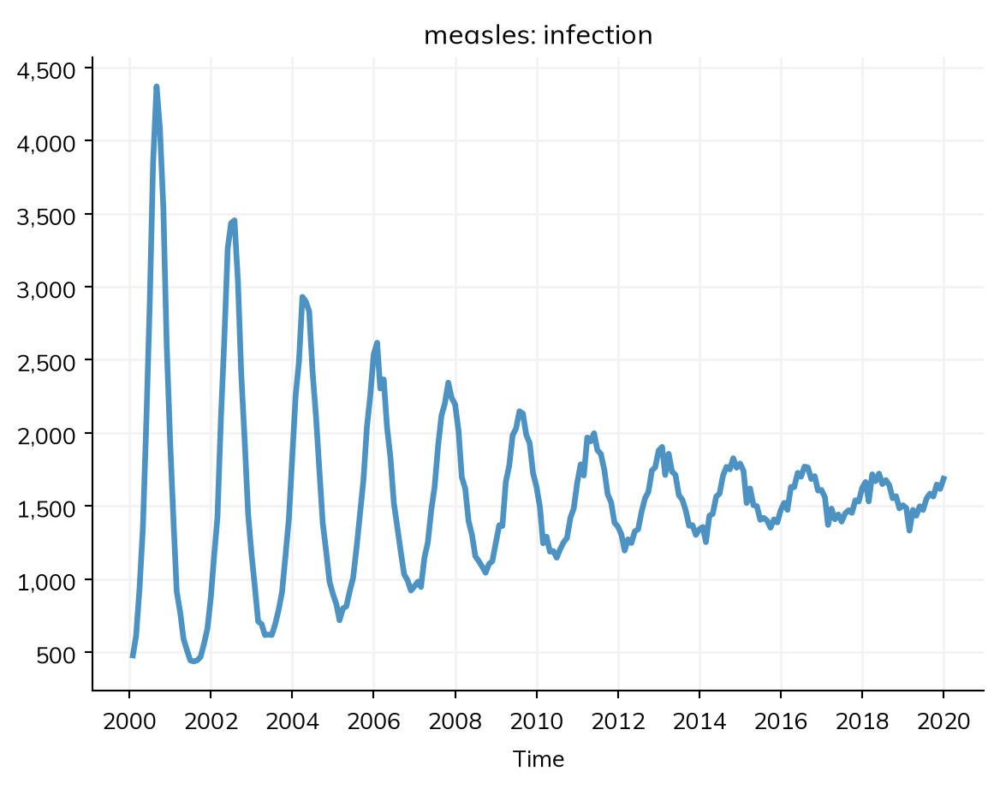
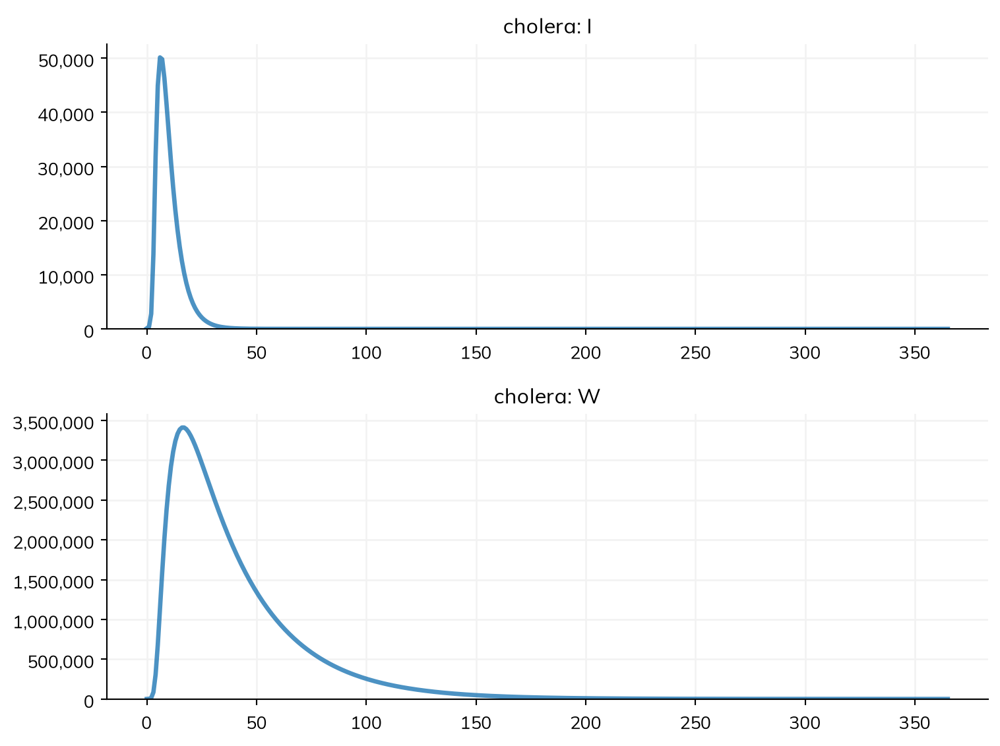
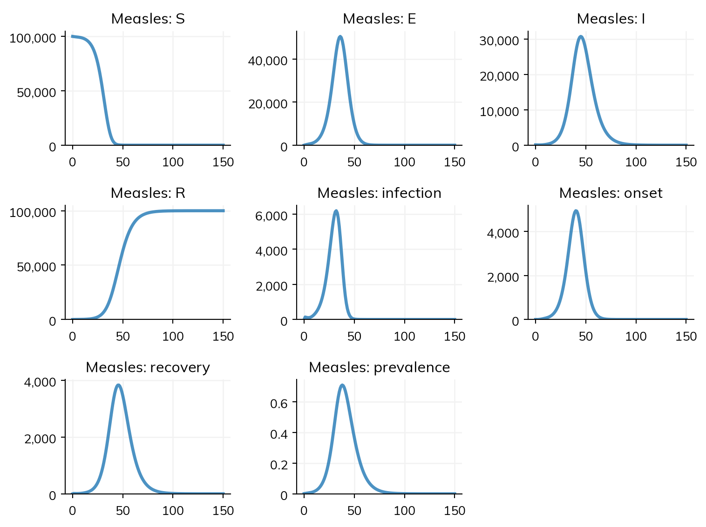
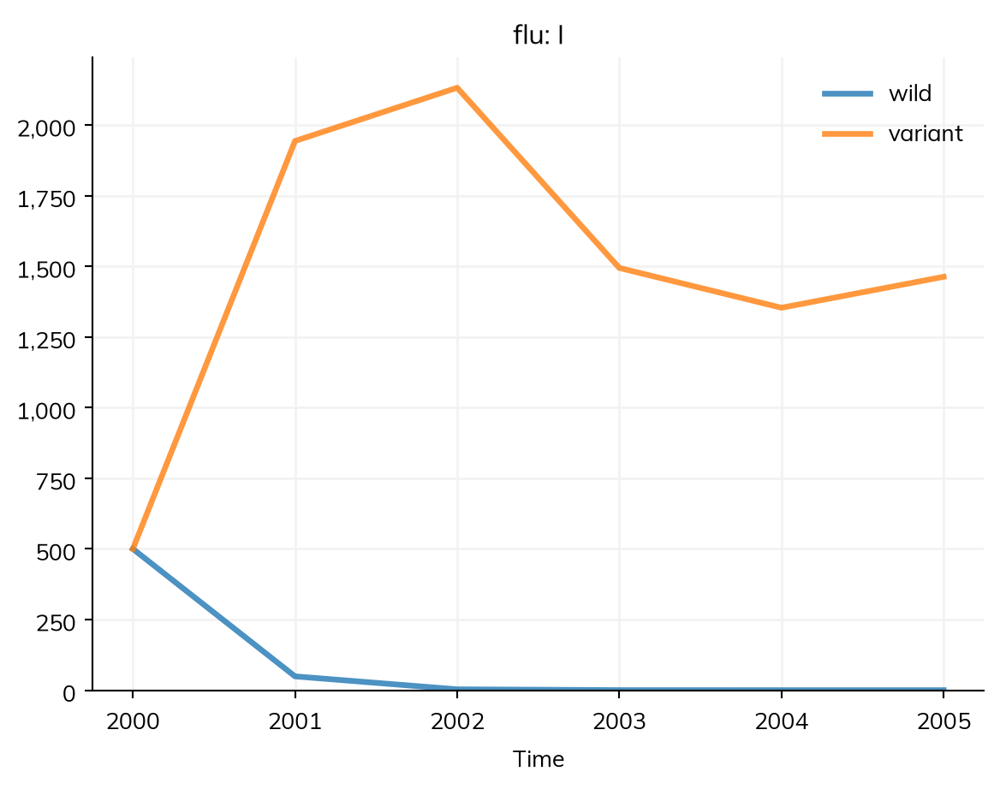

A disease in Starsim is declared the way a compartmental model is drawn: as the states people can be in (the compartments) and the transitions between them (the flows), each with what drives it, a rate or a duration. This page is the reference for writing them: the ways to write a transition, transmission and other rates, durations and their distributions, branching, how an epidemic starts, births and deaths, quantities that are not people, and susceptibility. A disease declared this way runs as a compartmental model or as agents, unchanged.
The simplified measles model used throughout these pages is an SIR model:
import starsim as ssS, I, R = ss.states('S I R')infection = S >> I @1.9*I # From S to I, at a rate of 1.9 per day times the share infectiousrecovery = I >> R @ ss.days(8) # From I to R, after 8 days on averagemeasles = ss.Disease(infection, recovery, init_prev=0.001)measles.equations()
dS/dt = -beta * S * I / N
dI/dt = beta * S * I / N - I / dur_I
dR/dt = I / dur_I
ss.states() makes the states, named in one string. A transition is written source >> destination @ driver: “S goes to I at 1.9 times I”. What follows @ is one of:
a rate, per person in the source state per unit of time, such as ss.perday(0.125), or an expression of states and parameters, such as 1.9*I;
a duration, such as ss.days(8): the average time people spend in the source state before they take this transition. A duration of 8 days and a rate of 1/8 per day are the same transition.
A bare number in a rate takes the model’s unit of time, here days, from ss.days(8); see Parameters. Names come from the variables: the states are S, I, and R, the transitions infection and recovery, and the disease measles, and so are their results (sim.results.measles.infection).
Ways to write a transition
There is one kind of transition, ss.Transition, and the operators are a short way to write it. These build the same model:
# Operators: the usual formS, I, R = ss.states('S I R')measles = ss.Disease(S >> I @1.9*I, I >> R @ ss.days(8), init_prev=0.001)# Named by keyword, e.g. when the transitions are written inlineS, I, R = ss.states('S I R')measles = ss.Disease( infection = S >> I @1.9*I, recovery = I >> R @ ss.days(8), init_prev =0.001,)# Fully explicit, e.g. to build a model in a loop, or from RS, I, R = ss.states('S I R')measles = ss.Disease( ss.Transition(S, I, rate=1.9*I, name='infection'), ss.Transition(I, R, dur=ss.days(8), name='recovery'), init_prev =0.001, name ='measles',)
A transition that has no variable or keyword to be named by is named infection if it is the disease’s only transmission, and otherwise gets a name from its states (I_to_R). A disease can also be written as a class, which is the form for a disease that goes into a library (below).
Transmission
A bare state in a rate, like I in 1.9*I, means contact with the people in that state. With no contacts given (homogeneous mixing), that is the share of the population in it, I/N, so S >> I @ beta*I is the textbook frequency-dependent transmission, with a flow of β S I / N. With a contact matrix or a network, the same rate is worked out from whom each person actually meets, and β is the rate per contact (see Stratification and Population data). A transition whose rate contains a bare state is contact-mediated, and that state is a source of infection.
For density-dependent transmission, in which the number of contacts grows with the size of the population (as is often assumed for animal or vector populations), write the count itself, I.n. The flow is then β S I:
S, I, R = ss.states('S I R')measles_density = ss.Disease(S >> I @1.9e-5*I.n, I >> R @ ss.days(8), init_prev=0.001)measles_density.equations()
dS/dt = -1.9e-05 * I.n * S
dI/dt = 1.9e-05 * I.n * S - I / dur_I
dR/dt = I / dur_I
A rate can also be written as the whole flow, as in the equations of other frameworks: S >> I @ beta*S*I/N (with N = S + I + R) is the same frequency-dependent model as beta*I, and beta*S*I the same density-dependent model as beta*I.n.
Several sources of infection are a sum: S >> E @ beta*(I + 0.5*A) says that people in A (say, without symptoms) are half as infectious as those in I. A rate must be linear in its bare states, since exposure on a network is a sum over contacts; anything nonlinear is written with counts (I.n).
Other rates
Anything that is not transmission is a rate per person, or a duration:
After @
Means
Example
a duration
the mean time in the source state
I >> R @ ss.days(8)
a distribution of durations
the time in the source state, with that distribution
I >> R @ ss.erlang(k=4, mean=ss.days(8))
a rate, or a bare number
a rate per person per unit of time
R >> S @ ss.peryear(0.1), R >> S @ 0.1
a probability per period
the chance of moving in each period, as a rate
I >> R @ ss.prob(0.12, 'day')
an expression with a bare state
transmission
S >> I @ beta*I
an expression of counts
a rate that depends on how many people are in each state
S >> I @ beta*W.n/(W.n + K)
a function of the sim
a rate worked out at each step
S >> I @ my_rate
A bare number after @ is always a rate, never a duration: I >> R @ 8 means a rate of 8 per day, so that people stay infectious for an eighth of a day. A duration is always typed (ss.days(8)), or given as dur= (ss.Transition(I, R, dur=8)).
Transitions out of the same state that are driven by rates (or durations with an exponential distribution) compete: the total rate of leaving is their sum, and each takes its share of those who leave. The order in which they are written doesn’t matter.
Durations
A single duration is the mean of an exponential distribution, as in an ODE model, and describe() marks this as a guess. An exponential distribution has a lot of spread: with a mean of 10 days, a third of people leave within 4 days, and one in twenty stays more than 30. The real latent period of measles (from infection to becoming infectious) is about 10 days in nearly everyone. A distribution with less spread is given in its place:
import numpy as npdef make_measles(latent):""" Measles with a latent period: S -> E -> I -> R """ S, E, I, R = ss.states('S E I R') infection = S >> E @1.9*I onset = E >> I @ latent recovery = I >> R @ ss.days(8)return ss.Disease(infection, onset, recovery, init=dict(I=0.001), name='measles')latents = {'Exponential': ss.days(10),'Erlang, 4 stages': ss.erlang(k=4, mean=ss.days(10)),'Fixed': ss.constant(ss.days(10)),}sims = {label: ss.Sim(make_measles(latent), total_pop=100_000, stop=ss.days(60), verbose=0) for label, latent in latents.items()}msim = ss.parallel(sims)msim.plot('measles.I')for label, sim in sims.items(): I = sim.results.measles.Iprint(label, '- peak infectious:', round(I.max()), 'on day', np.argmax(I.values))

Exponential - peak infectious: 29215 on day 28
Erlang, 4 stages - peak infectious: 32506 on day 41
Fixed - peak infectious: 36718 on day 48
All three have the same mean, and so the same R0, but with an exponential latent period some people become infectious within days, which brings the epidemic forward. The more realistic the distribution, the later and higher the peak.
The distributions most used for durations are:
Distribution
Use
Example
Exponential
The ODE default; a constant rate of leaving
ss.days(10)
Erlang (a gamma distribution with a whole number of stages, k)
A duration with less spread: the standard deviation is the mean divided by √k
ss.erlang(k=4, mean=ss.days(10))
Fixed
Everyone stays exactly this long, e.g. a reporting delay
ss.constant(ss.days(10))
Lognormal
A duration given by its mean and standard deviation, e.g. from a study
ss.lognorm_ex(mean=ss.days(10), std=ss.days(2))
Any other distribution of durations works too; see Distributions. As agents, each person draws their own time in the state. As compartments, an Erlang distribution is run exactly, as k stages in a row; a fixed duration is run exactly too (as one compartment for each step people have been in the state); and any other distribution is run as Erlang stages with the same mean and standard deviation, with a note that says so. stages=k on a transition (ss.Transition(E, I, dur=ss.days(10), stages=4)) says how many stages to use, under every solver.
Branching
Some people go one way and some another: most people with measles recover, but a small share die. There are two ways to say this, and they differ in when the branch is decided.
Separate transitions with p= are decided when people enter the state, and each branch can have its own duration. Here 0.2% of people with measles die, and ss.null is outside the model:
S, I, R = ss.states('S I R')infection = S >> I @1.9*Irecovery = ss.Transition(I, R, dur=ss.days(8), p=0.998)death = ss.Transition(I, ss.null, dur=ss.days(8), p=0.002)measles = ss.Disease(infection, recovery, death, init_prev=0.001)sim = ss.Sim(measles, total_pop=100_000, stop=ss.days(50), verbose=0)sim.run()print('Deaths:', round(sim.results.measles.death.sum()))
Deaths: 199
One transition with several destinations, given as a list with p= for the share going to each, is decided when people leave. Its result is the total, and each destination has a result of its own, <transition>.<state>. Here the dead are kept as a state, D, so that they can be counted:
S, I, R, D = ss.states('S I R D')infection = S >> I @1.9*Ioutcome = ss.Transition(I, [R, D], p=[0.998, 0.002], dur=ss.days(8))measles = ss.Disease(infection, outcome, init_prev=0.001)sim = ss.Sim(measles, total_pop=100_000, stop=ss.days(50), verbose=0)sim.run()res = sim.results.measlesprint('Deaths:', round(res['outcome.D'].sum()))print('Dead at the end:', round(res.D[-1]))
Deaths: 199
Dead at the end: 199
The shares out of one state must add up to 1; one of them can be left as None, for the rest. A share can vary by age group or in time, like any other value (Parameters).
How the epidemic starts
Three options say who is in which state at the start, and everyone not placed elsewhere starts in the first state (S):
init_prev= is the share of people who start infected (the initial prevalence). They start in the state that an infection leads to: I in an SIR model, but E in an SEIR model, where nobody is then infectious at the start (a note says so). A number above 1 is a number of people.
init= is the share of people who start in each state, e.g. init=dict(I=0.001, R=0.9) for an outbreak in a population that is 90% immune.
init_n= is the number of people who start in each state, e.g. init_n=dict(I=10).
If nothing is given, a disease with transmission starts with 1% of people infected (init_prev=0.01), which describe() marks as a guess. Values can also be given by group, with ss.by(); see Stratification.
Births and deaths in a disease
Births and deaths of everyone are usually given to the sim, as demographics=, so that the same people are born into and die from every disease (Demographics). With one disease, they can also be declared in it: ss.birth(S, rate=...) is a crude birth rate into S (a typed rate is per person; a bare number is per year, and above 1 per 1,000 people), and ss.death(rate=...) with no state is a death rate in every state, read the same way. A death from one state, ss.death(I, rate=...), is a rate like any other: a bare number is in the model’s unit.
New births are the supply of susceptible people that keeps measles endemic. Here is measles in a city of a million, starting from a population in which it has circulated before, so that only 7% of people are still susceptible. Since this model has values in both days and years, the unit of a bare number can’t be known, so β is given as ss.perday():
S, I, R = ss.states('S I R')measles = ss.Disease( infection = S >> I @ ss.perday(1.9)*I, recovery = I >> R @ ss.days(8), births = ss.birth(S, rate=ss.peryear(0.02)), # 20 births per 1,000 people per year deaths = ss.death(rate=ss.peryear(0.02)), # The same death rate, so the population is stable init =dict(S=0.07, I=0.0001), # The rest start in R, immune)sim = ss.Sim(measles, total_pop=1_000_000, start='2000-01-01', stop='2020-01-01', dt=ss.days(1))sim.run()sim.results.measles.infection.resample('month').plot()
Sim: measles, 1,000,000 people, as an ODE, 2000-01-01 to 2020-01-01
measles: R0 = 15.2 (R = 1.07 at the start, with 7% susceptible), with 100 infectious at the start
Note: the initial value of S in "measles" is kept, and the other 929,900 people start in R, the only state not given one
Done in 0.0095 s; measles: 377,978 infections; at most 1,136 infectious, on 2000-09-02

(The sim prints R0 = 15.2 and, since 93% start immune, R = 1.07 at the start; see The reproduction number.) Each epidemic uses up the susceptible people faster than births replace them, and then dies down until births have built them up again. So epidemics recur, here about every two years, and get smaller, towards a steady endemic level at which births balance infections. The period is close to the classical approximation 2π√(AD), with A ≈ 1/(μ(R0 − 1)) ≈ 3.6 years the mean age at infection (for a death rate μ of 0.02 per year) and D = 8 days the infectious period. In this deterministic model the epidemics damp out; Parameters over time shows how seasonal contacts keep them going. In a stochastic model the infection can also die out between epidemics in a small population; see Solvers.
States that are not people
Some of what a model tracks is not people: bacteria in water, or a population of mosquitoes. These are states too, declared with people=False. They are counts, not people: they are never agents, aren’t counted in the population, and are used in rates as counts (W.n). Here is a cholera model with bacteria shed into the water by infectious people (after Codeço, 2001):
beta =0.5# Rate of infection per day at a high concentration of bacteriaK =1e5# Concentration of bacteria (cells/mL) that gives half that ratexi =10# Cells/mL shed per infectious person per dayS, I, R = ss.states('S I R')W = ss.State(people=False) # Bacteria in the water: a count, not peoplecholera = ss.Disease( infection = S >> I @ beta * W.n/(W.n + K), recovery = I >> R @ ss.days(5), shedding = ss.null >> W @ xi*I.n, # An inflow: the total per day decay = W >> ss.null @ ss.days(30), # The mean lifetime in the water init =dict(I=0.001),)sim = ss.Sim(cholera, total_pop=100_000, unit='day', stop=365, verbose=0)sim.run()sim.diseases.cholera.plot('I', 'W') # The infectious, and the bacteria in the water

Since nobody catches cholera from a person here, the infection is spontaneous (its rate has no bare state), but it is still the acquisition of the disease: it is what a vaccine or a lower susceptibility acts on.
A count can weight each person: (ss.by(biting=[0.5, 1, 2])*I).n counts each infectious person by how much they are bitten (in a model stratified by biting), and I.n_trans by how infectious they are (their rel_trans, with any product or modifier on it), so a treatment that halves infectiousness also halves what the treated shed: shedding = ss.null >> W @ xi*I.n_trans. A weighted count works under every solver, worked out once a step in a compartmental run.
Susceptibility and infectiousness
A state can make the people in it less susceptible, or less infectious, than others, with rel_sus and rel_trans. For example, people vaccinated against measles (V) are 97% protected:
def make_measles(coverage): S, I, R = ss.states('S I R') V = ss.State(rel_sus=0.03) # Vaccinated: 3% as susceptible as others infection = S + V >> I @1.9*I recovery = I >> R @ ss.days(8)return ss.Disease(infection, recovery, init=dict(V=coverage, I=0.0001), name='measles')for coverage in [0.85, 0.90, 0.95]: sim = ss.Sim(make_measles(coverage), total_pop=100_000, stop=ss.days(365), verbose=0) sim.run()print('Coverage', coverage, '- infections in a year:', round(sim.results.measles.infection.sum()))
Coverage 0.85 - infections in a year: 23005
Coverage 0.9 - infections in a year: 14834
Coverage 0.95 - infections in a year: 3919
S + V >> I is one transition from either state. Even 95% coverage doesn’t stop the outbreak: with R0 ≈ 15, the share of people who must be immune to stop spread (the herd immunity threshold, 1 − 1/R0) is 93%, and 95% coverage with a vaccine that is 97% effective protects 92%.
Each person also has their own rel_sus and rel_trans, which interventions and connectors change: a vaccine lowers the rel_sus of those who get it (Products), and ss.modify(hiv.rel_sus, ...) can make one disease change the risk of another (Connectors). These act on the transitions that are an acquisition of the disease: every transmission, and any other transition out of the first state if the disease has no transmission (as for cholera above). To say otherwise, give acquisition=True or False to the transition; describe() lists which transitions it took as acquisitions.
Built-in SIR, SIS, and SEIR
ss.SIR, ss.SIS, and ss.SEIR are declared diseases with named parameters: beta, dur_inf, init_prev, p_death (0 by default), and dur_exp for the SEIR. Their results are the same as any declared disease’s, a result for each state and transition, plus a prevalence that each declares as a ratio of its states (prevalence = I/(S + I + R) in the SIR, (E + I)/(S + E + I + R) in the SEIR):
sir = ss.SIR(beta=ss.perday(1.9), dur_inf=ss.days(8), init_prev=0.001)sim = ss.Sim(sir, total_pop=100_000, stop=ss.days(50), verbose=0)sim.run()print(sim.results.sir.keys())
A disease can also be a class, with its states, parameters, and transitions in the class body. This is the form for a disease that goes into a library, or that is made many times with different values. Its parameters can then be given when it is made:
class Measles(ss.Disease): S, E, I, R = ss.states('S E I R') beta = ss.par(ss.perday(1.9), bounds=[1, 3], doc='Transmission rate', source='Gives R0 of about 15') infection = S >> E @ beta*I onset = E >> I @ ss.erlang(k=4, mean=ss.days(10)) recovery = I >> R @ ss.days(8)measles = Measles(beta=1.5, init=dict(I=0.001)) # Named "measles", after the classsim = ss.Sim(measles, total_pop=100_000, stop=ss.days(150), verbose=0)sim.run()sim.results.measles.plot()

The starting values can also go in the class body (init = dict(I=0.001)), as defaults that init= given to the disease replaces. A count can start from the number of people, e.g. init = dict(W=10*N), with N = (S + I + R).n.
A class can also have methods, for behavior that isn’t a transition: override step(), and call super().step() to run the declared transitions (Custom modules).
Declaring in __init__()
A class body runs once, for the class, so it can’t hold a state or transition that only some versions of the model have. Such a model declares them in its __init__(), on self, with define_states(), define_transitions(), and define_results(). Each one is an attribute at once (self.R), and they are built together once the model is made:
class SIRS(ss.Disease):def__init__(self, waning=None, **kwargs):super().__init__(init=dict(I=0.001), **kwargs) beta = ss.par(ss.perday(0.3))self.define_states(ss.states('S I R'))self.define_transitions( infection =self.S >>self.I @ beta*self.I, recovery =self.I >>self.R @ ss.days(10), )if waning isnotNone: # Immunity wanes only if asked forself.define_transitions(waning=self.R >>self.S @ waning)self.define_results(prevalence=self.I.frac) # A share of everyone in the modelfor waning in [None, ss.days(90)]: sim = ss.Sim(SIRS(waning=waning), total_pop=100_000, stop=ss.days(365), verbose=0) sim.run()print('Waning:', waning, '- prevalence after a year:', round(sim.results.sirs.prevalence[-1], 4))
Waning: None - prevalence after a year: 0.0
Waning: days(90) - prevalence after a year: 0.0666
States and transitions can also be given as lists, or one at a time with name= (e.g. in a loop over strains); overwrite=True replaces one that was declared already, e.g. with its rate changed.
Strains
A disease can have several strains that share its states: a person has one course through the states, carrying one strain or several, and each strain has its own values, given as multipliers on the transitions and on rel_trans. ss.immunity() gives the protection between them, here against infection in people who have recovered:
S, I, R = ss.states('S I R')strains = ss.Strains(['wild', 'variant'], rel_trans=[1, 1.5], immunity=ss.immunity(due_to=R, rel_sus=[[1, 0.5], [0.5, 1]]))flu = ss.Disease(infection=S >> I @ ss.peryear(8)*I, recovery=I >> R @ ss.years(0.1), waning=R >> S @ ss.years(1), init=dict(I=0.01), name='flu', strains=strains)sim = ss.Sim(flu, total_pop=100_000, start=2000, stop=2005, verbose=0).run()sim.results.flu.I.by('strain').plot();

With max_strains=2, people can carry two at once; ss.Strains lists the other options.
Strains with courses of their own
Some diseases don’t fit this, because each strain moves through the states on its own: someone can have CIN from one HPV genotype and be clearing another. Starsim tried one way of writing that, ss.strains.Family, in which the strains of one disease each followed their own course, with immunity between them, and with results over all of them. It was tested on HPVsim, its main use case, and it isn’t part of Starsim: the results were similar to HPVsim’s coded genotypes, but a declared genotype took about 2.5 ms a step against about 0.75 ms coded, which made the whole model about 1.5× slower, and it needed agents anyway once the strains protected each other.
If the strains can share one course, use ss.Strains as above. Otherwise, make each strain a disease of its own, and connect them with a connector. For protection that depends only on which states people are in, that is one ss.modify() for each strain:
def serotype(name): S, I, R = ss.states('S I R')return ss.Disease(infection=S >> I @ ss.perday(0.3)*I, recovery=I >> R @ ss.days(7), init=dict(I=0.001), name=name)den1, den2 = serotype('den1'), serotype('den2')cross = [ss.modify(den1.rel_sus, multiply=0.7, where=den2.R), ss.modify(den2.rel_sus, multiply=0.7, where=den1.R)]sim = ss.Sim([den1, den2], connectors=cross, n_agents=5_000, unit='day', stop=200, verbose=0).run()print(sim.results.den1.infection.sum(), sim.results.den2.infection.sum())
3650.0 3891.0
Each strain then has its own results (sim.results.den1), and a delivery can act on several (disease=[den1, den2]). ssl.Dengue is built this way. Anything more involved, such as a matrix of protection from each person’s antibody levels, is a connector written as code; this is how HPVsim’s cross_genotype.py works.
Diseases written as code
A disease that needs something states and transitions can’t say, such as a quantity that each person carries and that changes continuously (a CD4 count, a viral load, or an immunity level that wanes), is written as a Python class, with arrays for each person and methods that update them. It runs as agents, and can sit in the same sim as declared diseases. There are two base classes:
ss.Disease, for a disease with no transmission between people, such as a non-communicable disease.
ss.Infection, for a transmitted disease. It adds the states susceptible and infected, each agent’s relative susceptibility and infectiousness (rel_sus and rel_trans), and transmission over the sim’s networks with a beta for each, which is rarely worth writing again. ssl.AgentSIR and ssl.AgentSEIR (import starsim.library as ssl) are complete examples, and good bases for a disease of your own.
A disease written as code fills in some of these methods:
Method
What it does
When to override it
__init__()
Gives the parameters (define_pars()) and states (define_states())
Always
set_prognoses(uids, sources)
Sets what happens to the people just infected: when they recover, whether they die
Always, for an ss.Infection; call super().set_prognoses() first
step_state()
Moves people between states each step, before transmission (e.g. those whose recovery is due)
When the disease has states of its own
step_die(uids)
Clears the states of people who died
When the disease has states of its own
infect()
Transmission over the networks
Rarely: the built-in version handles the networks, beta, rel_sus, and rel_trans
In transmission, the chance that infection passes along a contact from an infectious person to a susceptible one is, in essence, β × rel_trans of the source × rel_sus of the target, where β is the transmission rate of that network. rel_sus and rel_trans are 1 by default, and are the levers that the rest of a model pulls: a vaccine lowers rel_sus, a treatment lowers rel_trans, and a connector between two diseases can raise one disease’s rel_sus in people infected with the other. Because they are ordinary arrays, they can also be set directly. Here everyone under 20 is fully protected (rel_sus = 0), and compared with no protection:
import starsim.library as sslfor protect in [False, True]: sir = ssl.AgentSIR(beta=ss.perday(0.03), dur_inf=ss.lognorm_ex(mean=ss.days(10), std=ss.days(3)), p_death=0, init_prev=0.01) sim = ss.Sim(sir, networks='random', n_agents=2000, stop=ss.days(120), verbose=0) sim.init() sir = sim.diseases.agentsir # The sim's copy of the disease young = (sim.people.age <20).uids older = (sim.people.age >=20).uidsif protect: sir.rel_sus[young] =0.0# Under-20s can't be infected sim.run() ever_infected = sir.ti_infected.notnanprint('Under-20s protected:', protect)print(' Ever infected, under 20:', ever_infected[young].sum(), 'of', len(young))print(' Ever infected, 20 and over:', ever_infected[older].sum(), 'of', len(older))
Under-20s protected: False
Ever infected, under 20: 632 of 676
Ever infected, 20 and over: 1241 of 1324
Under-20s protected: True
Ever infected, under 20: 7 of 676
Ever infected, 20 and over: 1031 of 1324
The few under-20s infected even when protected were infected at the start (init_prev). Protecting them also protects older people, a little under a third of whom now escape infection, since there are fewer people to pass it on. In a model with a vaccine, the same protection would come from a product, and between diseases from a connector, rather than by setting rel_sus by hand.
Infected and infectious are different things once a disease has a latent period. In ssl.AgentSEIR, people in E and I are both infected (and count towards prevalence), but only those in I are infectious; infectious drives transmission, and infected is worked out from the two. A disease whose latent people transmit too would give the exposed a rel_trans above 0 instead.
The parts of a module written as code (its parameters, states, results, and the order in which Starsim calls its methods) are covered in Custom modules, and A1 – Diseases builds a disease among agents step by step.
Pitfalls
A bare number after @ is a rate.I >> R @ 8 is a rate of 8 per day, not 8 days; write ss.days(8).
A rate with no state in it is not transmission.S >> I @ 0.2 infects everyone in S at 0.2 per day whether or not anyone is infectious. Transmission names its source: S >> I @ beta*I.
init_prev in an SEIR model starts people in E. To start some people infectious, give init=dict(I=...).